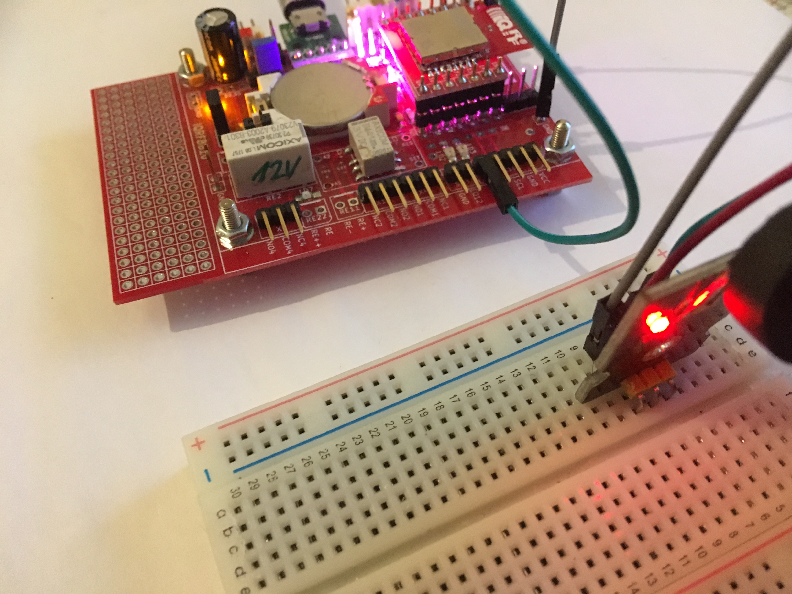
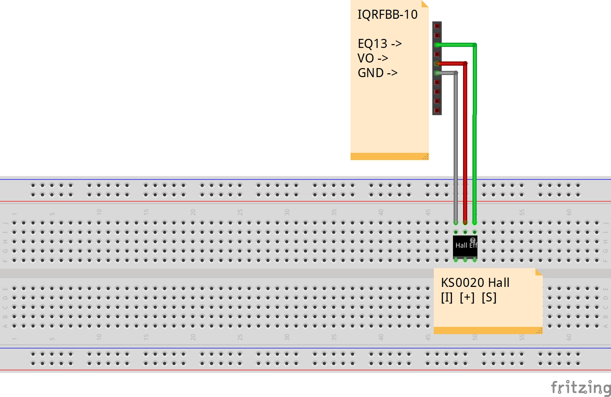

Hall Magnetic Sensor

This example shows how to connect KS0020 Hall Magnetic Sensor with the board.
Prerequisities
- IQRFBB-10 bonded in working IQRF network. More in GettingStarted with IQRFBB-10
- IQRF Gateway Daemon running. More in IQRF Gateway Daemon
- Python 3.6 with WebSockets module. More in Python 3.6 WbSockets example
Hardware wiring

Fig.: IQRFBB10 schema

Fig.: External LED wiring
Connect VO, EQ13 and GRND pins with KS0020 Keyestudio Hall Magnetic Sensor.
Software
- We use Standard DPA handler already loaded in board TR module.
- Testing software:
- Set EQ13 as DI. EQ13 is Q13/RE3 pin on TR-76DA.
- Read all DI in the loop
- Parse response and make decision
API JSON message
We will use pure DPA messages handled via Daemon JSON API:
DPA commands:
| NADR | PNUM | PCMD | HWPID | PDATA | What |
|---|---|---|---|---|---|
| XXXX | 09 | 00 | FFFF | 10.08.08 | Set RE3 (Address E3) as DI |
| XXXX | 09 | 02 | FFFF | Read all DI pins |
- NADR: must be your address of IQRFBB-10 in IQRF network.
- Numbers in table are in hex format.
Testing Software
Link to dpa-hall.py.